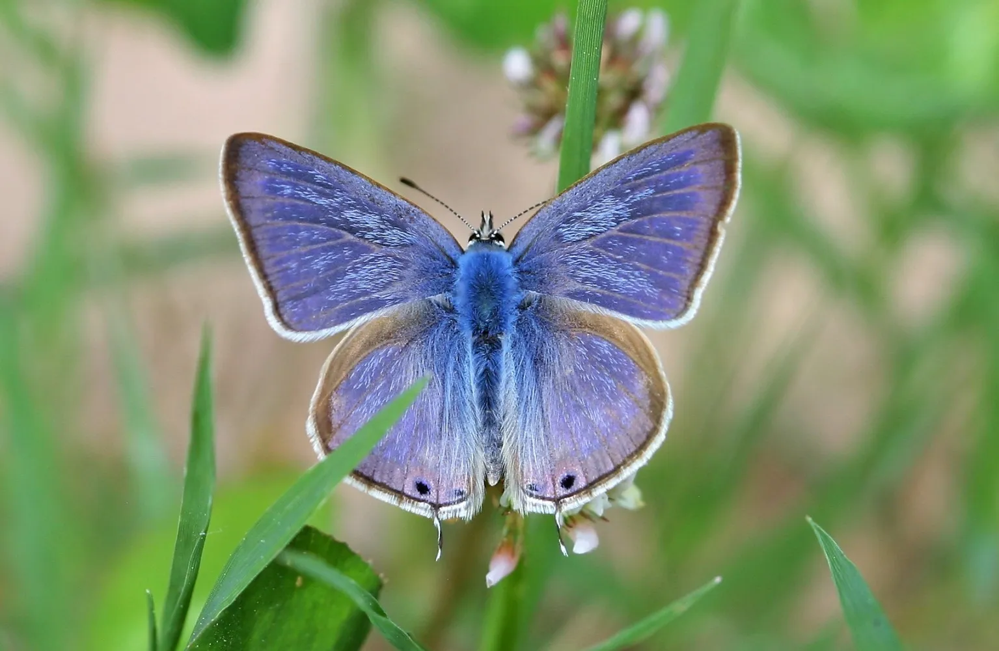
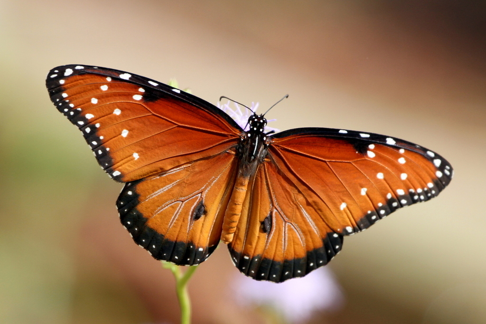
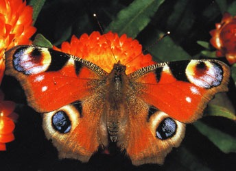
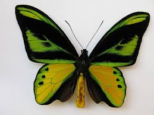
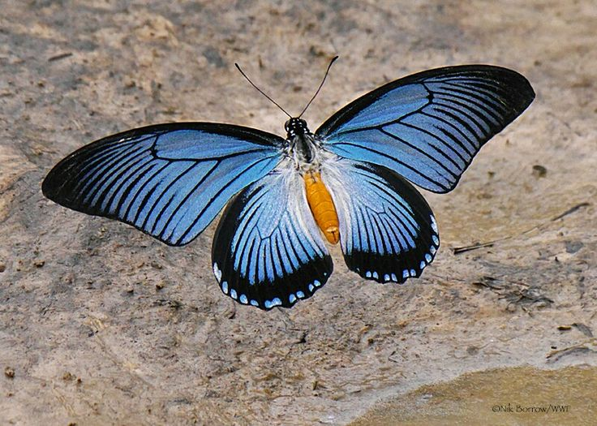
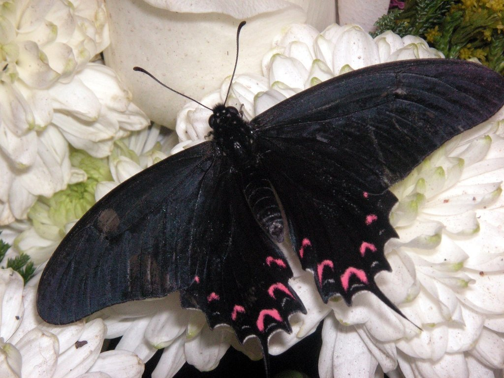
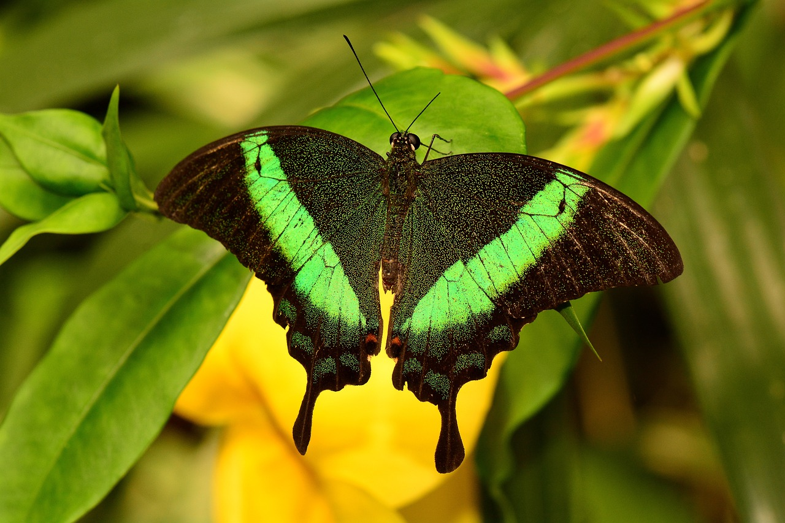

Las mariposas con su constante y silencioso vuelo de flor en flor, hacen que el paisaje se llene de color,que son de algún modo los insectos más vistosos,
y así llaman nuestra atención. Insectos cuya belleza es cambiante y cautivadora, éstas experimentan una metamorfosis en la cual una larva que emerge de un
huevo, se convierte en una crisálida que dará origen a un adulto que vuela. Además de ser hermosas y representar la libertad, el cambio, la transformación
la esperanza en la vida y mucho más,ayudan a esparcir el polen con sus alas e incluso llegan a predecir los cambios en el clima. Esperando que estos
interesantes insectos sean de su agrado y motiven a otros a conocer más sobre las mariposas.
¿Qué son las Mariposas?
Las mariposas son un tipo de insecto muy popular por los llamativos colores que tiñen sus alas y por su vuelo vacilante cuando se acerca el buen tiempo. Se conoce con el nombre popular de mariposa a las distintas especies existentes de insectos lepidópteros (del griego lepsis, “escamas”, y pteron, “alas”),
casi siempre voladores, de los más numerosos entre todos los insectos del planeta. Algunas especies tienen hábitos diurnos y otras nocturnos, pero las nocturnas son la mayoría (y las menos populares). Existen alrededor de 165.000 especies diferentes de mariposas, clasificadas en 127 familias.
Características
Antes de comenzar con las caracteristicas más relevantes de las mariposas,debemos saber que las mariposas pertenecen al orden de los lepidópteros (Lepidoptera),el cual incluye también a las polillas.
*Son artrópodos e insectos. Poseen un cuerpo segmentado y provisto de miembros articulados, con un exoesqueleto de quitina que lo recubre. Además, al ser insectos, poseen tres pares de patas, un par de antenas y dos pares de alas membranosas, que en
el caso de las mariposas están cubiertas de escamas coloreadas.
*Cuerpo segmentado. Cuentan con seis patas, dos alas y un cuerpo dividido en tres partes: cabeza, tórax y abdomen. Su boca tiene forma de tubo pues es la herramienta con la que succionan los nutrientes de las plantas para alimentarse a través de una larga
lengua enrollada.
*Un ciclo de vida complejo. El ciclo de vida de una mariposa tiene lugar en cuatro etapas: huevo, larva, pupa y adulto. Este proceso que lleva múltiples semanas hasta llegar a la metamorfosis, y que de esta manera la mariposa emergerá de su capullo .
*Insectos migratorios. Muchas especies de mariposas recorren cientos de kilómetros en sus viajes de un lugar a otro, dependiendo de condiciones climáticas o para reproducirse. Un ejemplo de la migración en mariposas esta la Monarca, la mariposa monarca es
capaz de viajar más de 4 mil kilómetros (desde Canadá y Estados Unidos de América) hasta los bosques de oyameles de los estados de Michoacán de Ocampo y estado de México, recorriendo alrededor de 120 kilómetros por día y realizan su viaje en 33 días, con el proposito de
aparearse y dejar sus huevos en plantas de algodoncillo.
*Magnificos colores y patrones en sus alas. Las mariposas se caracterizan por sus únicos patrones de colores en diferentes familias. Las alas de las especies diurnas poseen colores muy vistosos, con patrones específicos, a menudo diseñados como método de
camuflaje e incluso colores semejantes a los de otros insectos venenosos. Estos colores les sirven incluso para señalizarse unas a otras o para el cortejo.
Tipos de Mariposas
Mariposas Nocturnas
Muchos tipos de mariposas son nocturnas ya que por la noche cuentan con menos riesgos de depredadores, como
de pájaros,aumentando sus posibilidades de vida durante la
noche, una caracteristica interesante de las mariposas nocturnas es que las alas de estas mariposas cuentan con una
coloración que les permite camuflarse con facilidad
en los troncos de los árboles y las hojas.
Ejemplos de Mariposas Nocturnas
Mariposa isabelina (Graellsia isabelae)
La mariposa isabelina es una especie de lepidóptero ditrisio de la familia Saturniidae, una de las más vistosas de la
fauna europea, con una envergadura que va
desde 45 mm hasta 10 cm. Es una especie única entre nuestras mariposas nocturnas, descubierto y descrito por
un español, Mariano de la Paz Graells, zoólogo y,
por aquel entonces, director del Gabinete de Historia Natural y del Jardín Botánico de Madrid, quién la dedicó a la
Reina Isabel II de Borbón, quedando la soberana
muy agradecida como sorprendida por la belleza y porte de tal mariposa. Se oculta en las copas de los árboles durante
el día, pero al anochecer son capaces de recorrer
grandes distancias, sobre todo en su época de reproducción.
Esta especie también es una de las más hermosas, sus alas presentan un patrón que combina verde pistacho, castaño,
negro y rosa.
Mariposa cebra (Heliconius charithonia)
La mariposa cebra (Heliconius charithonia) es una especie de mariposa perteneciente a la familia Nymphalidae.Fue
declarada la mariposa oficial del estado de Florida en
1996, aunque también se distribuye en otras zonas del país, además de encontrarse en América del Sur y
Central. Esta especie de mariposa se encuentra en América
del Sur, Centroamérica, las Antillas, México, el sur de Texas y Florida. Los individuos adultos migran a veces hacia el
norte, a Nuevo México, Carolina del Sur
y Nebraska, en los meses más cálidos. Esta especie frecuenta bosques húmedos, bordes o campos.
El patrón de rayas blancas sobre el fondo negro de sus alas advierte a los depredadores. Para dormir por la noche
forman grupos de hasta 60 individuos para
protegerse de los depredadores y mantener el calor.
Mariposas Diurnas
Las mariposas diurnas como su nombre indica, vuelan de manera exclusiva durante el día, aunque no todas las
mariposas que vuelan de día se incluyen dentro de esta
clasificación. Las mariposas diurnas suelen poseer patrones cromáticos vibrantes y diseños llamativos. En muchos
casos se debe a una
coloración estructural, en la que la disposición de las escamas sobre la superficie alar es la que determina la forma en
que se refleja la luz sobre la mariposa.
Estas mariposas son las más conocidas y admiradas por su belleza y corresponden a las especies de colores más
hermosas e impresionantes.
Otra de las características es la forma de sus antenas, estas son siempre largas, delgadas y con un engrosamiento en
forma de maza en la terminación, resulta muy útil
la observación de la distribución del sistema venoso en la superficie alar ya que permite separar las diferentes familias
entre sí. También se caracterizan por mantener
las alas plegadas de forma vertical al cuerpo cuando están en reposo.
Ejemplos de Mariposas Diurnas
Mariposa Cristal (Greta oto)
La Greta oto es un tipo de mariposa con alas que parecen de cristal. Este insecto también se conoce como mariposa
espejitos o en inglés como glasswing butterfly porque
tiene las alas transparentes. Sus bordes si poseen color: puede variar entre negro o marrón oscuro y a veces rojo o
naranja. Cuando abre las alas, llega a medir entre
5,5 y 6 centímetros.
Habita en zonas húmedas y es endémica de América Central. Principalmente se encuentra en los siguientes
países: México, Panamá, Ecuador ,Paraguay, Colombia ,Bolivia ,Perú y Venezuela.
Los colores en las alas de este tipo de insecto tienen como objetivo ahuyentar a los depredadores. Las alas desarrollan
la misma finalidad: al no tener color, se camuflan
perfectamente con cualquier fondo. Si no fuera por sus bordes, el ala de cristal sería prácticamente invisible al ojo
humano.
Para lograr la transparencia, el tejido no debe absorber la luz. La transparencia se logra porque tienen un índice de
refracción único, y no dispersan la luz.
Mariposa Nazarena (Favonius quercus)
La mariposa Nazarena es un lepidóptero que pertenece a la gran familia de las mariposas alas de telaraña, alisadas o
Lycaenidae.Es de tamaño medio y luce parcialmente
un bonito azul metálico en las hembras ya que los individuos adultos presentan dimorfismo sexual: las alas de la
hembra son negras con zonas de color azul metalizado,
las del macho es de color gris brillante.
Es una especie de mariposa con amplia distribución en Europa,se encuentra en los bosques de robles de toda Europa y
norte de África. Mide hasta 39 milímetros y anida en
los árboles, donde forma extensas colonias. Se alimenta de néctar y suele volar durante las tardes veraniegas.
Mariposas Pequeñas
Algunas mariposas son pequeñas y delicadas. Por lo general, las mariposas de menor tamaño tienen una esperanza
de vida más corta y cuentan con una coloración sencilla
incluso unicolor.
Ejemplos de Mariposas Pequeñas
Mariposa canela estriada (Lampides boeticus)
Es una pequeña mariposa que mide tan solo 42 milímetros, se localiza en Europa, África, Asia del Sur y Sudeste
Asiático, y Australia. Pertenece a la familia Lycaenidae.
Se distribuye en Inglaterra y Escocia, donde vive en jardines o praderas. Es una especie migratoria capaz de viajar
desde el Mediterráneo hasta Inglaterra.
En cuanto a su apariencia, presenta delicadas alas azuladas con bordes grises. La proporción de azul y gris varía en
cada especie.

Mariposa náyade (Celastrina argiolus)
Es una pequeña mariposa azul, son pequeñas, de 2,5 a 3 cm de envergadura, más grandes las hembras que los
machos.
Su nombre común es el de las náyades de la mitología griega, haciendo referencia al hábitat típico de esta especie,
cerca de cursos de agua, en lugares
sombríos y húmedos.
Es una especie muy asociada a los cursos de agua.
Ocupa toda la Europa continental desde el Mediterráneo hasta el sur de la península escandinava, sur de las islas
británicas, islas mediterráneas y norte de África.
Por el este su rango de distribución llega hasta Japón y también se encuentra en Norteamérica.También en los bosques
de ribera, los prados y los matorrales cercanos a
los ríos y arroyos son sus hábitat naturales, también en bosques claros, desde zonas bajas hasta los 1500 m de altitud,
pero también en zonas urbanizadas,
en parques y jardines
Mariposas Grandes
En algunos lugares del mundo es posible toparse con mariposas impresionantemente grandes, a continuación
mencionaremos dos ejemplos de estas maravillosas mariposas.
Ejemplos de Mariposas Grandes
Mariposa de la Reina Alexandra (Ornithoptera alexandrae)
La mariposa más grande del mundo. Esta afirmación es cierta si tenemos en cuenta la envergadura (distancia entre
el ápice de las alas delanteras extendidas) la cual
puede alcanzar los 31cm.
Se trata de una especie de la familia Papilionidae con un marcado dimorfismo sexual: los machos son de colores
brillantes y más pequeños, las hembras en cambio tienen
colores oscuros con manchas amarillas o blancas.
La distribución de estas mariposas grandes se reduce a la región de Popondetta (Papúa Nueva Guinea),donde vive en
bosques lluviosos, de hecho se encuentra en la
bandera provincial y es considerada una de los animales nacionales.
Mariposa atlas (Attacus atlas)
Sus alas alcanzan hasta 30 centímetros de longitud.Los especímenes femeninos son más grandes y más fuertes que
los masculinos. Es posible encontrarla en China, Malasia
e Indonesia, donde vive en los bosques.
Las alas de esta mariposa presentan un patrón que combina colores como el castaño rojizo, verde pálido y crema. Es
una especie criada para la obtención de cera.
El nombre específico hace referencia al titán Atlas, de la mitología griega; también se la conoce como mariposa cabeza
de serpiente, por la forma del ápice de las alas
anteriores.
Ejemplos de las Mariposas

Mariposa reina (Danaus gilippus)
Una especie de Mariposas tigre, También conocido como Reina naranja.
Es muy parecida a la mariposa monarca, sin embargo, la mariposa reina es más pequeña y el color anaranjado de sus
alas es más obscuro. Las alas anteriores son largas
con un contorno triangular, las posteriores son redondeadas y más pequeñas.
Es una mariposa de América del Norte y del Sur de la familia Nymphalidae con una envergadura de 70 a 88 mm (2,8 a
3,5 pulgadas), además se las halla mundialmente,
incluyendo Norteamérica, Sudamérica, África, Asia, Indonesia, Australia.

Mariposa Pavo Real(Inachis io)
Una de las mariposas más bellas que desde la primavera hasta bien entrado el otoño.
Esta especie únicamente tiene una generación anual, que vuela desde julio hasta septiembre.
Su área de distribución es muy amplia y comprende Europa hasta los aproximadamente 60º de latitud Norte. Se
extiende hasta Asia templada llegando hasta Japón. En Euskadi
puede considerarse como una especie abundante que está presente en todos sus territorios.

Mariposa quimera con alas de pájaro (Ornithoptera chimaera)
Es una mariposa ala de pájaro de la familia Papilionidae.
Ornithoptera chimaera vive en las montañas de Nueva Guinea. Su nombre científico, que vendría a significar algo así
como “quimera con alas de pájaro” hace referencia a
la apariencia de los machos en esta espectacular especie de mariposa ya que el macho es de color verde muy
diferente a la hembra la cual es más grande que el macho y el
color general de la hembra es marrón oscuro.

Mariposa Gran papilio azul (Papilio zalmoxis)
Es una de las mariposas africanas más impresionantes. Se eleva muy alto en la selva tropical y aparece como trozos
de cielo azul que caen entre los árboles.
Tiene una envergadura de unos 12 a 16 centímetros (4,7 a 6,3 pulgadas) y es la segunda cola de golondrina africana
más grande. El color de la parte superior de
las alas suele ser azul, pero puede ser verdoso, contrastando con el color gris claro de la parte inferior de las alas.

Mariposa cometa de medias lunas rojas (Mimoides thymbraeus)
Es una especie de mariposa en la familia Papilionidae. Se distribuye de México a El Salvador y Honduras, donde es
común.
La mariposa vuela en hábitats abiertos durante todo el año y es bastante común en una altitud de 500 a 1560 m. Está
distribuida del oriente de México a Honduras.
El ala trasera en el macho y hembra tiene dos filas de manchas rojas.

Mariposa Cola de golondrina esmeralda (Papilio palinurus)
El pavo real esmeralda es una mariposa fascinante que destaca por su espectacular coloración y su envergadura de 8-10 centímetros. Su belleza se debe a la composición estructural de sus alas y a cómo refractan la luz solar. Es nativa del sudeste asiático y se encuentra en regiones como Birmania, Malasia peninsular, Sumatra, Borneo e Indonesia, entre otros lugares. Su hábitat se encuentra dentro de las selvas tropicales de estas regiones asiáticas.